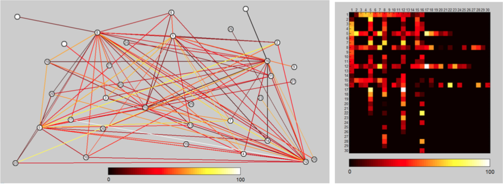
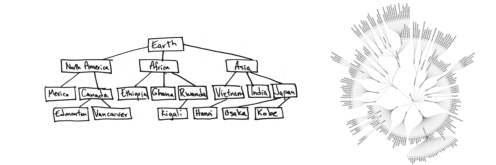
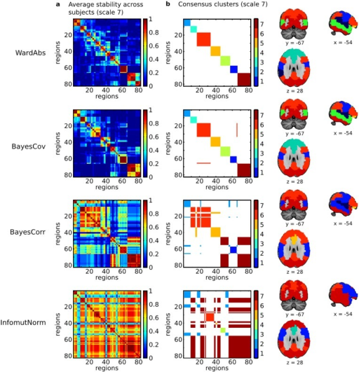
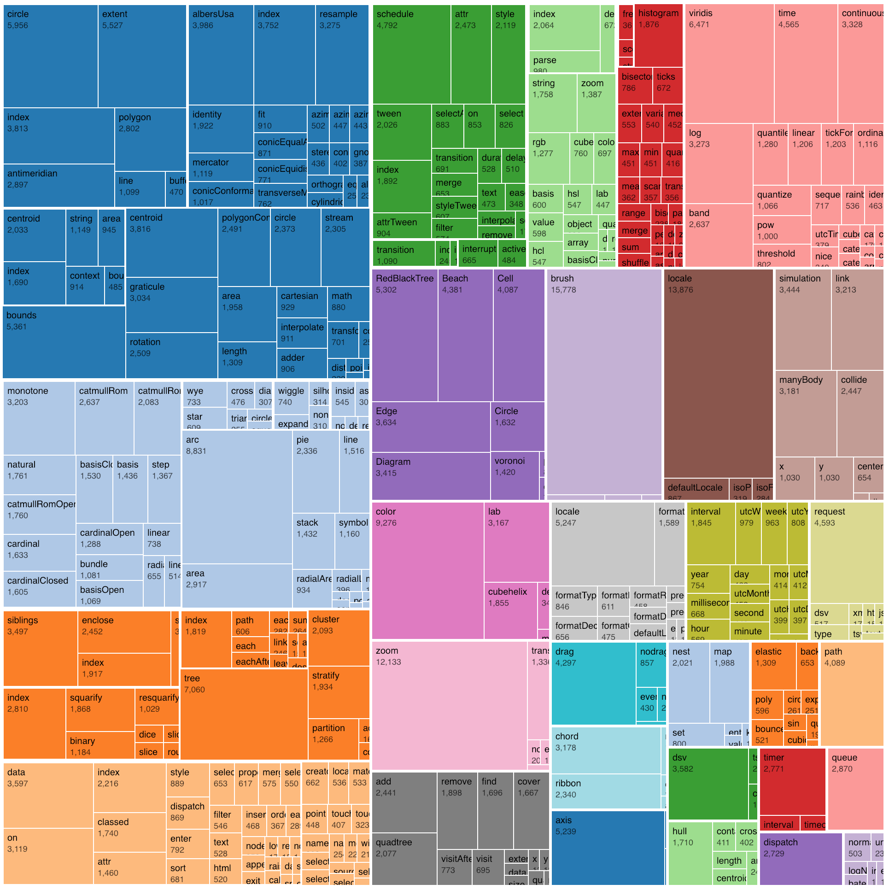
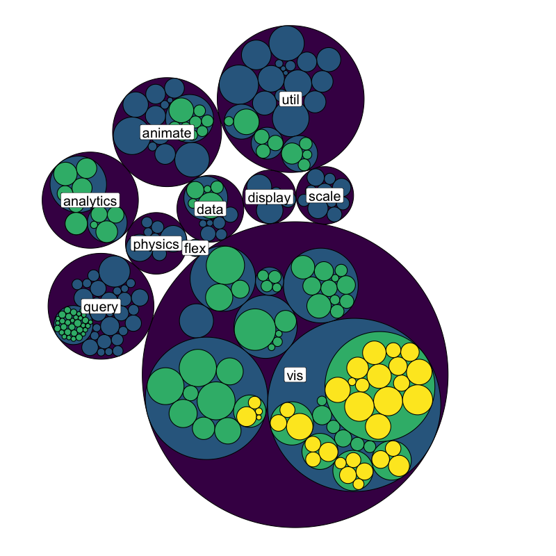

<!doctype html>
<html>
  <head>
<meta charset="utf-8">
<meta name="viewport" content="width=device-width, initial-scale=1.0, maximum-scale=1.0, user-scalable=no">

<title>Lecture 9</title>

<link rel="stylesheet" href="https://cdnjs.cloudflare.com/ajax/libs/reveal.js/3.6.0/css/reveal.css">
<link rel="stylesheet" href="https://cdnjs.cloudflare.com/ajax/libs/reveal.js/3.6.0/css/theme/white.min.css">
<link rel="stylesheet" href="https://maxcdn.bootstrapcdn.com/font-awesome/4.5.0/css/font-awesome.min.css">

<!-- Theme used for syntax highlighting of code -->
<link rel="stylesheet" href="https://cdnjs.cloudflare.com/ajax/libs/highlight.js/9.12.0/styles/github.min.css">
<link href="https://fonts.googleapis.com/css?family=Questrial" rel="stylesheet">

<!-- Printing and PDF exports -->
<script>
    var link = document.createElement( 'link' );
    link.rel = 'stylesheet';
    link.type = 'text/css';
    link.href = window.location.search.match( /print-pdf/gi ) ?  '/revealjs/css/print/pdf.css' : '/revealjs/css/print/paper.css';
    document.getElementsByTagName( 'head' )[0].appendChild( link );
</script>
<script src="https://cdnjs.cloudflare.com/ajax/libs/reveal.js/3.6.0/lib/js/head.min.js"></script>
<script src="https://cdnjs.cloudflare.com/ajax/libs/reveal.js/3.6.0/js/reveal.min.js"></script>


<style type="text/css">
.reveal section.present {
  text-align: left;
}
.centered {
  text-align: center;
}
.reveal {
  font-size: 30px;
  font-family: 'Questrial', sans-serif;
}
.reveal section img {
  box-shadow: none;
  border: 0px;
  display: block;
  margin-left: auto;
  margin-right: auto;
}
.reveal bigtext {
  font-size: 800%;
}

.reveal h1, .reveal h2, .reveal h3 {
  text-transform: none;
}

.reveal .titleslide h1 {
  text-align: center;
}
.reveal .titleslide h2 {
  text-align: right;
}

.vertical_center section {
  vertical-align: middle;
}

.left_abs {
  left:0%;
  text-align: left;
  float: left;
  width:50%;
  z-index:-10;
}

.left {
  left:-8.33%;
  text-align: left;
  float: left;
  width:50%;
  z-index:-10;
}

.right {
  left:31.25%;
  top: 75px;
  float: right;
  text-align: right;
  z-index:-10;
  width:50%;
}

.reveal table td {
  text-align: left;
  padding: 0.2em 0.5em 0.2em 0.5em;
  border: solid; 
}

.reveal table tbody tr:last-child th,
.reveal table tbody tr:last-child td {
  border-bottom: solid; }

.reveal .table-hl {
  background: #aaa;
}

.reveal .slide-number {
  font-size: 36pt;
  right:7%;
}

</style>
  </head>

  <body>
    <div class="reveal">
      <div class="slides">
        <section data-markdown
           data-separator="^\n---\n"
           data-separator-vertical="^\n----\n"
           data-separator-notes="notes?:"
           >
          <script type="text/template">
<!-- .slide: class="titleslide" -->

# Data Visualization
<div style="height: 6.0em;"></div>
## AJ Christensen 
## Spring 2019
## Lecture 9

---

## Warm-Up Activity

 1. What is the visualization trying to show?
 1. What are its methods?
 1. What are the strengths / weaknesses?

[XKCD Money](https://xkcd.com/980/huge)

---

## Networked and Hierarchical Data

 1. Node-link diagrams
 1. Matrix views



From: <a href="https://www.researchgate.net/publication/258716465_Visualizing_Weighted_Networks_A_Performance_Comparison_of_Adjacency_Matrices_versus_Node-link_Diagrams">this article</a>

notes:
There are two primary types of visualization for data that has inherent linkages.

This figure here is actually showing the same networked dataset.

---

## Node-link Diagrams

 1. Trees
 1. Force-Directed Graphs


notes:
These are the primary ways that you would draw a linked node diagram.

You might have different sizes of symbols, different shapes, or different link or symbol colors to encode other information.

---

## Node-link Diagrams

 1. Trees
 1. Force-Directed Graphs


From: <a href="https://github.com/jcatw/snap-facebook">this GitHub</a>

notes: in the python lecture we'll be working with a subset of this facebook dataset - showing linkages between individuals as their facebook friendships

this is a node-link diagram of this full facebook dataset showing groups of connected individuals, and how the groups are connected to eachother.

---

## Node-link Diagrams

 1. Nodes
   * might have 0-to-many edges linked to them
 1. Edges (sometimes called "links")
   * associated specifically with 2 nodes
   * can have a direction
   * can have a weight


notes:
This is a diagram of some selected military alliances during the Cold War.

---

## Node-link Diagrams

 1. Nodes
   * might have 0-to-many edges linked to them
 1. Edges
   * associated specifically with 2 nodes
   * can have a direction
   * can have a weight


notes:
One common use-case for these is genetics. Scientists need visualizations to understand how one gene affects another, either directly OR **indirectly**.

here is shown an example of how the BRCA genes associated with some forms of breast cancer are linked to various other genes.

---

## Tree Diagrams

 * Topological
 * Ordered
   * Left-to-Right
   * Inside-Out
   * Top-to-bottom
 * Always one incoming edge (low density)
 * Discrete, not Continuous



notes:
trees have a topology or hierarchy. These are especially good for a *deep* hierarchy.

The physical space between nodes isn't meaningful like it would be in a scatter plot. Rather the number of "hops" along edges is important.

The left hand plot has a top-down ordering, while the right-hand plot is ordered radially such that the most connected object is at the center.

---

## Force-Directed Graphs

 * Nodes push away from each other as if their edges are springs.
 * Nodes push away from each other by local repulsion force.
 * Forces can be weighted.


notes:
These use simulated forces to push apart what might otherwise look like a mad hairball.

Edge springyness can be weighted by edge weight, node repulsion can be weighted by node weight. (We'll play with this)

You could place the points in any arbitrary place and let them evolve. You could start with a scatter plot representing numerical values, but the nodes will just move. You could also put all the points at the same starting place.

Note that this means these plots are in a sense "non-deterministic" in that you can get slightly different plots every time. 

---

## Force-Directed Graphs

 * Path Distance
 * Joint or Disjoint
 * Discrete, not Continuous


notes:
These are useful for identifying clusters, finding all possible paths, finding the shortest path, finding all adjacent nodes, finding bridges between unconnected nodes, etc.

---

## Force-Directed Graphs

 1. Drawbacks:
   * Non-deterministic (different every time)
   * Link Density can be an issue when over 3-4 links per node


notes:
this is a social network graph that looks fine at high resolution, but on this screen is more or less unreadable.

---

## Matrix Views

 1. Adjacency Matrix
   * List all values along X AND Y axes

</td>
</td>

notes:
Matrix views remove occlusion and hairball issues completely. They are preferred for extremely dense data.

However they do not show topology, and they might be less intuitive to identify clustering.

---

## Matrix Views

 1. Adjacency Matrix
   * List all values along X AND Y axes
   * Can cut in half along diagonal if non-directional


notes:
This is sometimes called a "Folded" adjacency matrix

---

## Matrix Views

 1. Adjacency Matrix
   * List all values along X AND Y axes
   * Can cut in half along diagonal if non-directional
   * Color cells by edge weight



notes:
As you can see by the square plots here - these are supposed to show the networked structure of some brain data - can you easily pick out what variables are linked? (I can't!)

---

## Matrix Views


notes:
Pokemon type-effectiveness chart yay!

Notice this is directional - Attackers and Defenders don't have same effect on different types.

---

## Hierarchical Data

 1. Trees
 1. Containment
   1. Treemaps



notes:
Another way to look at networked data - treemaps

containment better at shallow, broad trees than node-link tree diagrams

good for identifying topological outliers

This visualization is file size of the D3 visualization library.

---

## Hierarchical Data

 1. Trees
 1. Containment
   1. Treemaps
   1. Nested Circles



notes:
This is also known as circle-packing.

---

## Compound Networks

 1. Network and Tree together


notes:
Now we're combining a hierarchical nested circle containment WITH linked nodes from our cold war alliances.

There are lots of ways to combine types of network visualizations like this.

---

## An aside: <a href="https://en.wikipedia.org/wiki/Hilma_af_Klint">Hilma af Klint</a>


---

## An aside: <a href="https://en.wikipedia.org/wiki/Hilma_af_Klint">Hilma af Klint</a>


---

## ipyleaflet

Leaflet is another mechanism of plotting, displaying and interacting with maps.

We will very briefly play with this in Python - could be of use for those that were having issues with cartopy.

---

## Today's Python

Today: we will be building a mini-dashboard using Maps of different kinds.

The dataset is on data.world and is entitled:

"Surgery Charges Across the U.S."

We'll explore the data together and then move on to plotting.

... to Python!

---

## Assignment 8

Prose assignment: Find 3 examples of networked data visualization from data in different industries (for example, genetics, social media, politics, etc) in the real world.  

 1. One must be a force-directed graph
 1. One must be a matrix diagram
 1. One must be a hierarchical visualization like a tree or a containment map. 

For each network, write a paragraph analyzing how the visualization helps its audience discover insights into the data. Then, write a final 4th paragraph comparing the relative strengths and weaknesses of the visualization methods of the three visualizations against each other.

Each paragraph will be worth 5 points. Be sure to include the visualizations in your submission.

          </script>
        </section>
      </div>
    </div>
<script>
    // More info about config & dependencies:
    // - https://github.com/hakimel/reveal.js#configuration
    // - https://github.com/hakimel/reveal.js#dependencies
    Reveal.initialize({
        dependencies: [
            { src: 'https://cdnjs.cloudflare.com/ajax/libs/reveal.js/3.6.0/plugin/markdown/marked.js' },
            { src: 'https://cdnjs.cloudflare.com/ajax/libs/reveal.js/3.6.0/plugin/markdown/markdown.min.js' },
            { src: 'https://cdnjs.cloudflare.com/ajax/libs/reveal.js/3.6.0/plugin/notes/notes.min.js', async: true },
            { src: 'https://cdnjs.cloudflare.com/ajax/libs/reveal.js/3.6.0/plugin/highlight/highlight.min.js', async: true, callback: function() { hljs.initHighlightingOnLoad(); } },
            { src: '/reveal.js-plugins/chalkboard/chalkboard.js' },
            { src: 'https://cdnjs.cloudflare.com/ajax/libs/reveal.js/3.6.0/plugin/math/math.min.js', async: true }
        ],
		keyboard: {
			67: function() { RevealChalkboard.toggleNotesCanvas() },	// toggle notes canvas when 'c' is pressed
			66: function() { RevealChalkboard.toggleChalkboard() },	// toggle chalkboard when 'b' is pressed
			46: function() { RevealChalkboard.clear() },	// clear chalkboard when 'DEL' is pressed
			 8: function() { RevealChalkboard.reset() },	// reset chalkboard data on current slide when 'BACKSPACE' is pressed
			68: function() { RevealChalkboard.download() },	// downlad recorded chalkboard drawing when 'd' is pressed
		},
        center: false,
        transition: 'none',
        backgroundTransition: 'none',
        showNotes: true,
        progress: false,
	slideNumber: true,
    });
</script>
  </body>
</html>

